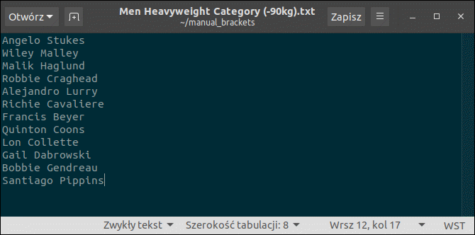
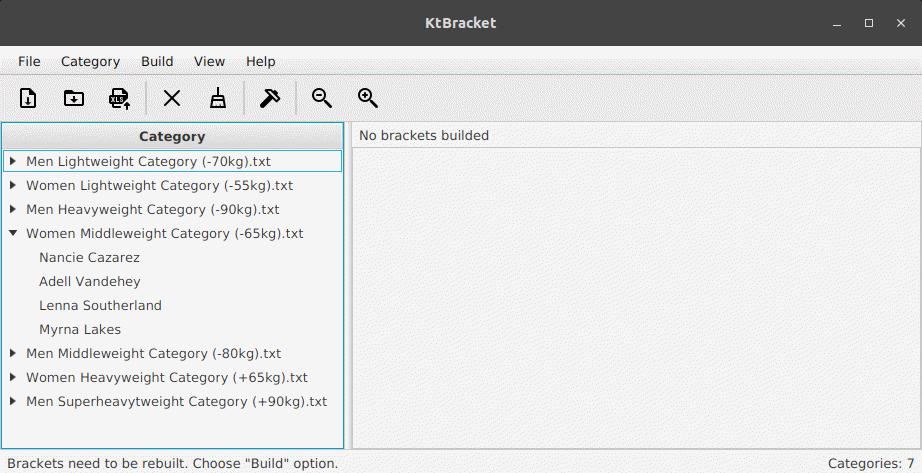
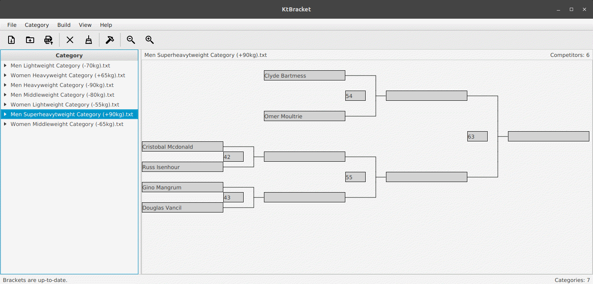
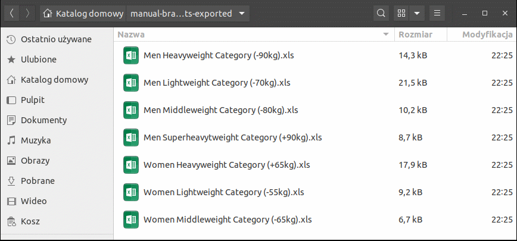
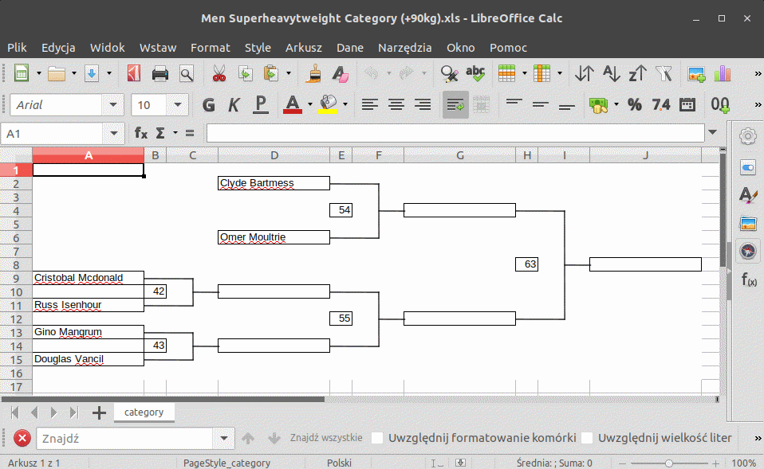

Description
This application is intended to build brackets for tournaments played in the single - elimination system. At one time a set of brackets for single mat is created and all fight numbers are assigned. Competitors are loaded from properly prepared text files. Before brackets generation competitors are shuffled within a given category. Generated brackets may be exported to spreadsheet files (*.xls) – each bracket to a separate file.
Basic usage
Assuming that on a single mat several weight/age categories are played, the bracket generation process for the mat is as follows:
Prepare a set of text files containing full names of competitors – one file for each category, respectively. Place all files in a separate directory prepared for them. Inside of the each file set competitors full names in a column – every person in a new line, like below:

|
Run KtBracket and choose File - > Import categories… option. Choose a directory where all prepared text files were saved. All loaded files (weight/age categories) will appear in a Category panel. You may expand a selected position from the list to see competitors assigned to a given category.

|
Choose Build - > Build option. A bracket for each category will be generated and all fights will be numbered. Because fight numbering starts from the biggest bracket down to the smallest, categories in a Category panel are now sorted from the most numerous to the least numerous one. It allows to browse conveniently through generated brackets along the numbering. After building you will see first (the biggest) bracket. Now you may browse through them by clicking a selected category in a Category panel or using keyboard arrows.

|
In order to save generated brackets, choose File - > Export to XLS… option. Choose a directory where you want to save brackets. All brackets will be exported to spreadsheet files (*.xls) – each one to a separate file. Each file will be named with its category name respectively.

|

|
Import a single category
It is possible to import and add a single file with competitors for a given category every time it is needed. Choose File - > Import category… option, then browse for the file you want to import. Imported category will appear at the bottom of the list in a Category panel. Note that now it’s necessary to rebuild all brackets (see a message on the status bar – bottom of the application window). A bracket must be generated for the newly imported category and fight numbering for each bracket now must be changed – the numbering of each bracket depends on the others. Choose Build - > Build option to rebuild all brackets.
Remove category
You may also remove a selected category when it is needed. Select a category you want to remove in a Category panel and choose Category - > Remove selected option. The item will disappear from the Category list and bracket generated for it also will be removed. Remember that now a fight numbering for all brackets must be updated. To do that choose Build - > Build option.
Clear all
In order to remove all loaded categories and generated brackets, choose Category - > Clear all option.
Zoom in / Zoom out
Some brackets may be bigger than an available space on the screen. In this case you may use scrollbars or zoom the bracket out by choosing View - > Zoom out as many times it is needed to make entire bracket visible. But when it’s zoomed out too much, some elements of the bracket may not be readable. Go to View - > Zoom in to make it zoomed in back.